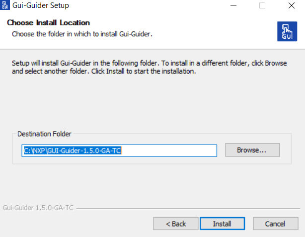
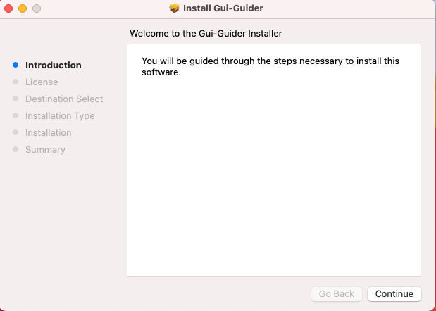

LV_MEM_SIZE in lv_conf.hsetup.exe file. 
$ sudo apt install ./Gui-Guider-Setup-1.7.0-GA.debwget https://github.com/libsdl-org/SDL/releases/download/release-2.26.5/SDL2-2.26.5.tar.gz
tar -zvxf SDL2-2.26.5.tar.gz
cd SDL2-2.26.5
./configure --prefix=/usr/local
sudo make -j && sudo make install
brew install cmake command./usr/local.
offline-template.zip from the NXP official website.C:\nxp\GUI-Guider-1.7.0-GA\environment.